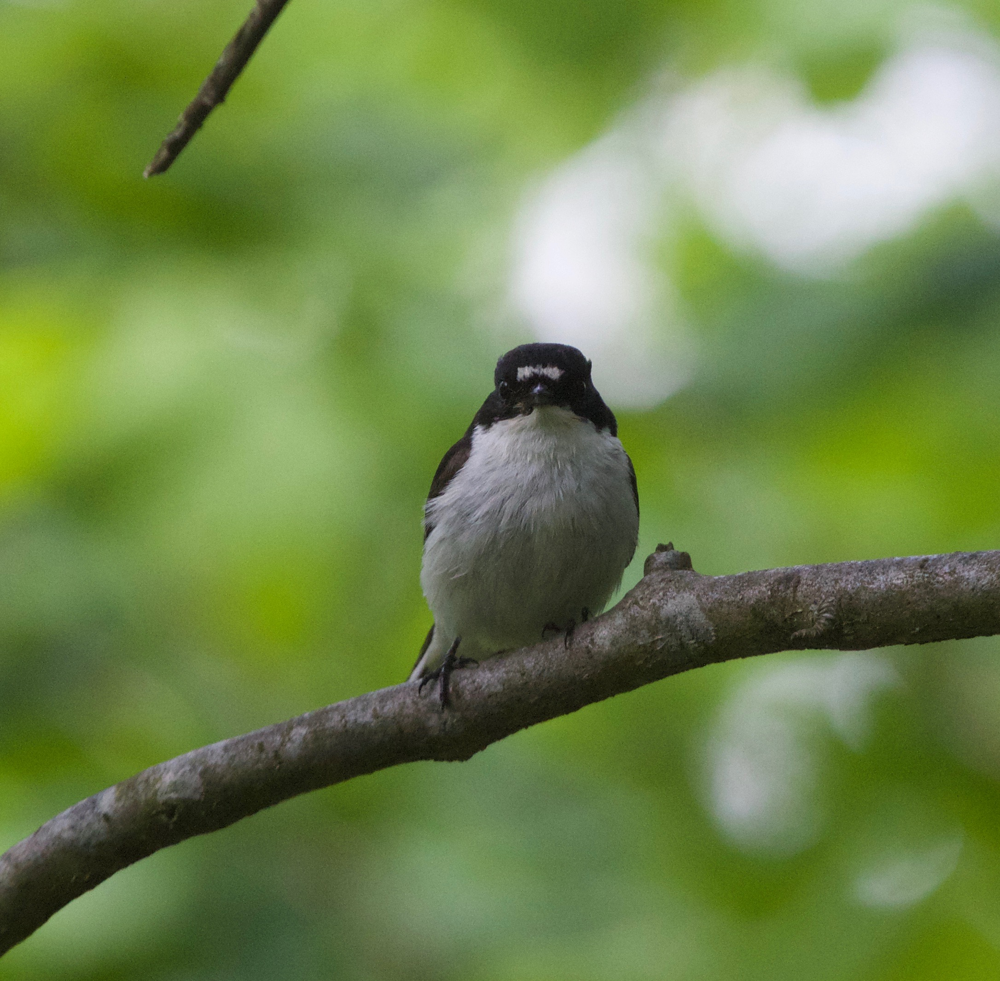
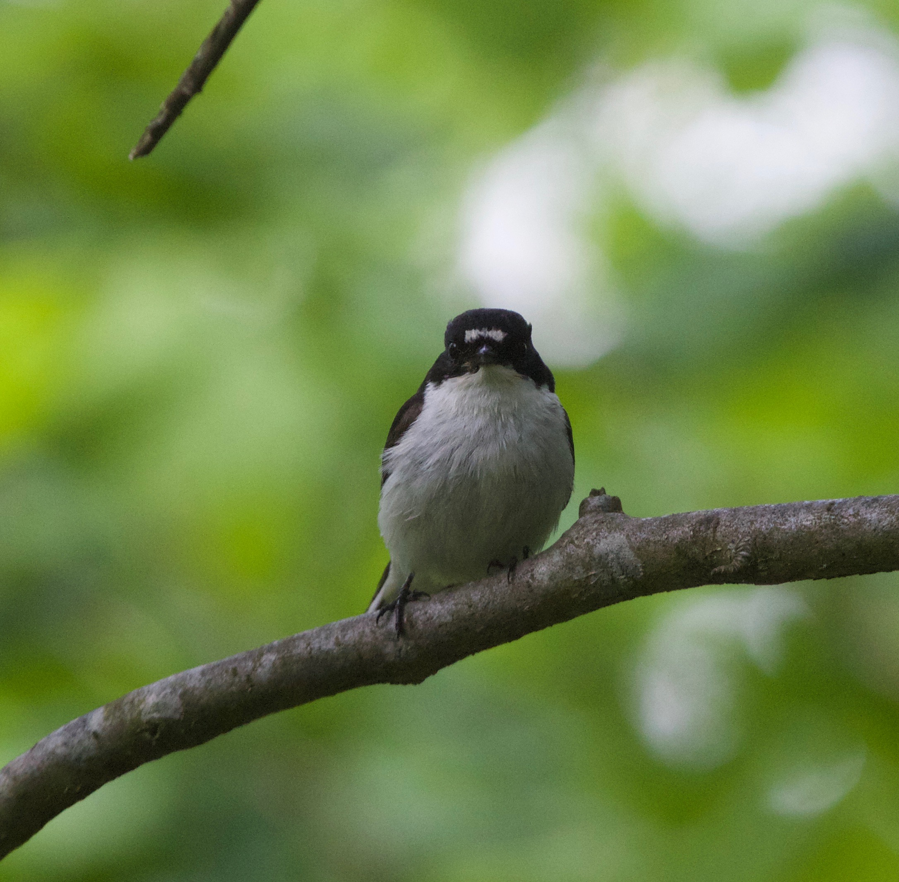

Red deer x Sika hybrids in Scotland

photo courtesy of Ken McInnes
Red deer are a charismatic, economically important deer species that are characteristic of the Scottish wilderness. Sika are a Japanese deer species that was introduced to Scotland in the 19th century, resulting in hybridization between the two species.
In collaboration with Josephine Pemberton, I have used high density markers to determine 1) which individuals are hybrid individuals (McFarlane et al. 2020), 2) how do they differ phenotypically from the parental species and 3) which regions of the genome are introgressing faster between species, as might be indicative of selection (McFarlane et al. 2021)? Additionally, we examined the use and benefits of high density markers in systems of anthropogenic hybridization, and suggested that backcrossing is likely underestimated in such systems (McFarlane and Pemberton 2019). Finally, I use transcriptomics to differentiate gene expression between the species and understand allele specific expression. This transcriptomic work is in collaboration with Bengt Hansson at Lund University.
I am currently in the process of expanding this project to include European sympatric and hybridizing populations. If you’re interested in collaborating (and if you want to explore whether the red deer or sika you work on are hybrids), please get in touch!
Work on the red deer - sika hybrid zone has been done by Josephine’s group before my arrival. This is a well described system because of work by Helen Senn, Steph Smith and Darren Hunter, as well as many others.
  I combined field experiments with long term monitoring data to ask 1) Does metabolic rate affect the competition dynamics between collared and pied flycatchers? and 2) does metabolic rate of hybrid individuals hint a genetic incompatibilities between these two species? My Phd Thesis “Speciation and Metabolic Rate: insights from an avian hybrid zone” is available here.
 I combined field experiments with long term monitoring data to ask 1) Does metabolic rate affect the competition dynamics between collared and pied flycatchers? and 2) does metabolic rate of hybrid individuals hint a genetic incompatibilities between these two species? My Phd Thesis “Speciation and Metabolic Rate: insights from an avian hybrid zone” is available here.